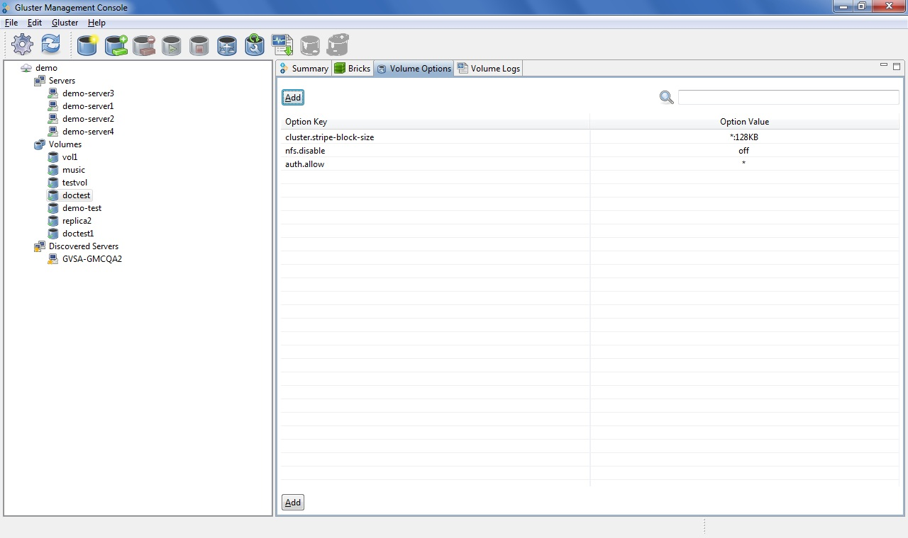

Tuning Volume Options
You can set volume options, as needed, while the cluster is online and
available.
To tune volume options, perform the following steps.
- Select the volume that you need to add Volume Options.
- Click the Volume Options tab.

- Click Add. Choose the volume options from the drop down list
and enter the Options value.
To read more about the volume options, refer to the Gluster
Filesystem Administration Guide, Section 8.1 Tuning Volume Options.